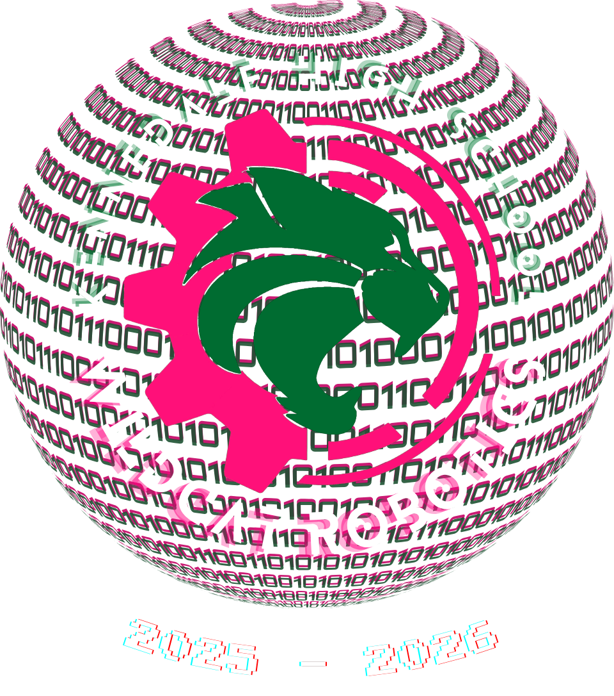
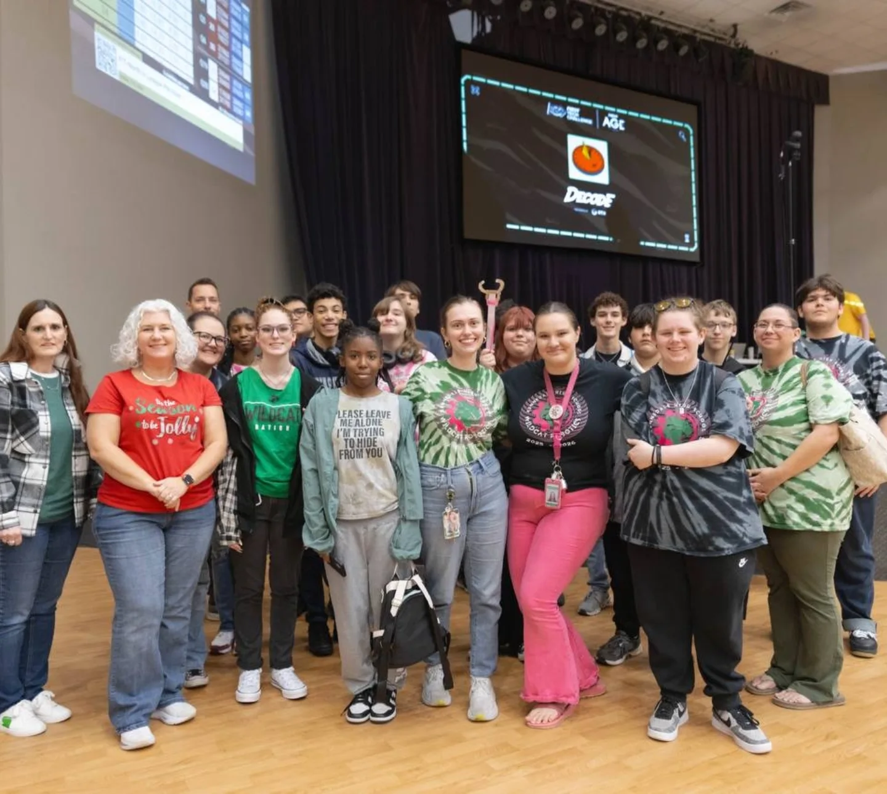

Team Number: 0508
Team Number: 17658
KHS Robotics is a student-led team dedicated to engineering, programming, and innovation. We compete in FIRST Tech Challenge (FTC) and Cowtown BEST Robotics while developing technical skills, leadership, and teamwork.
Through competition and community outreach, we inspire the next generation of problem-solvers.

Our team at FTC during the 2025 season.
Our team is currently designing, building, and programming our competition robot for the upcoming season.
We are preparing for FIRST Tech Challenge and Cowtown BEST Robotics competitions.
Our team continues to share STEM education and robotics with our community.
Our team is currently preparing for the upcoming robotics season. We are focused on designing, building, programming, and improving our robot while strengthening our teamwork and engineering skills.
Follow our team's progress as we design, build, and program our robot. Throughout the season, we document our improvements, challenges, and achievements.
Developing ideas, creating prototypes, and planning our robot's mechanisms.
Constructing and improving our robot through testing and iteration.
Creating autonomous routines and driver-controlled systems.